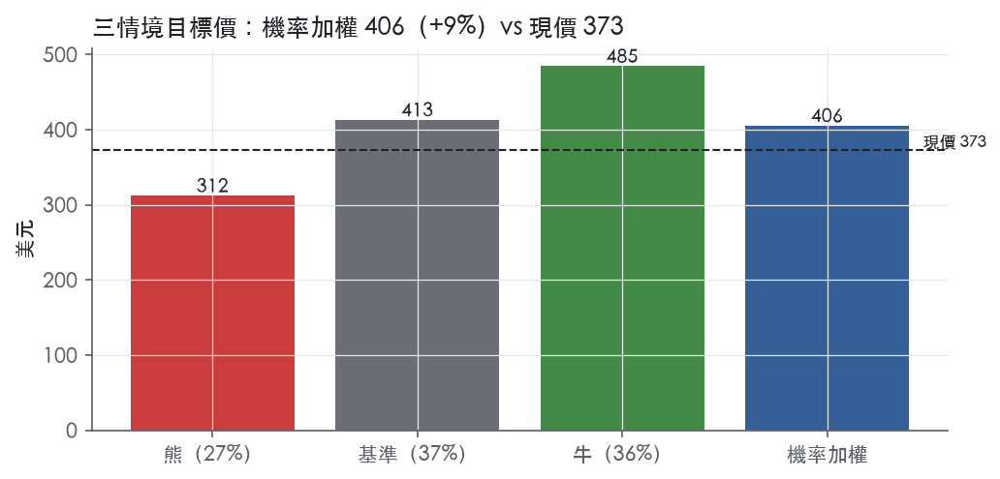
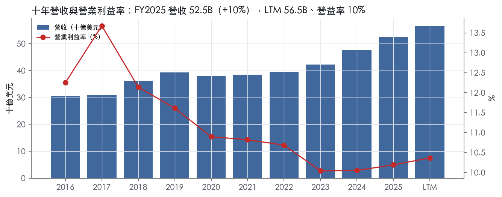
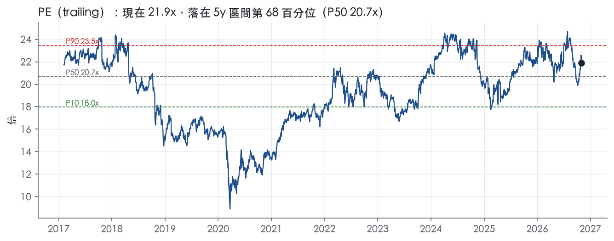
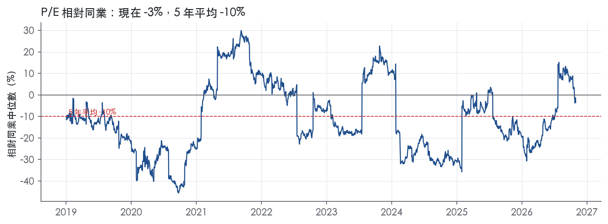
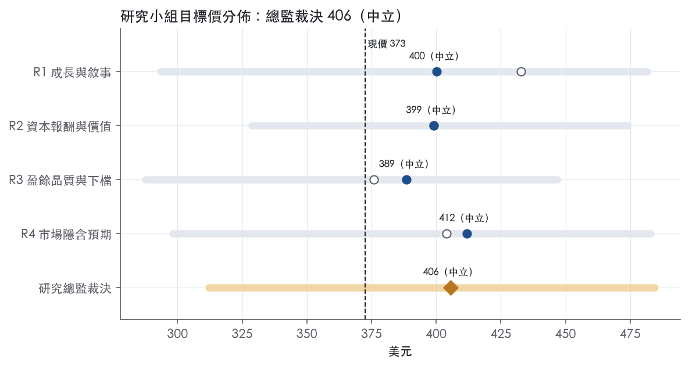
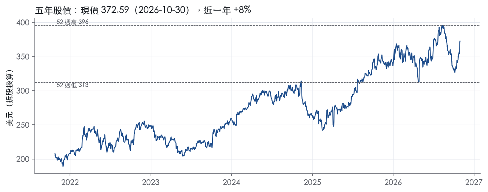

評等總表 › 工業 › GD
中性偏多：盈餘優於基準，倍數持平｜評等 中立｜目標價 406
| 報告日 | 評等 | 目標價 | 當時股價 | 超額報酬 |
|---|---|---|---|---|
| 2026-10-30 | 中立 | 406 | 373 | +1.8% |
| 評等 | 中立 |
| 12 個月目標價 | 406 美元 |
| 現價 | 372.59 美元（2026-10-30） |
| 預期報酬 | 股價 +8.8%＋股息 1.7%＝總報酬 +10.5%；同業籃門檻 8.7%，超額 +1.8% |
| 估值方法 | P/E 19.0x，套在第 5–8 季的EPS（也就是一年後的未來四季） |
| 三情境 | 熊 312／基準 413／牛 485 |
| 研究流程 | 四位研究員兩輪辯論＋研究總監裁決 |
| 資料來源 | SEC EDGAR XBRL、Tiingo、FRED（全免費） |
中性偏多：盈餘優於基準，倍數持平（研究總監裁決，四位研究員兩輪辯論後）
評等 中立｜12 個月目標價 406 美元（總監三情境機率加權 411 與研究員中位數 400 各半）｜現價 372.59（2026-10-30）
預期報酬：股價 +8.8%＋股息 1.7%＝總報酬 +10.5%。同業籃門檻 8.7%，超額 +1.8%。
估值方法：P/E 19.0x，套在第 5–8 季的EPS（也就是一年後的未來四季）。三情境：熊 312（27%）／基準 413（37%）／牛 485（36%）。
什麼會讓研究總監改變看法：FY2026Q4 Marine 營益率低於 7.0%、認列合約損失或 Columbia 首艦延後，熊機率上調並轉空；2027 年指引合併營益率 ≥10.7% 且 Marine ≥8%，轉看多。
| 過去四季（實際，FY2026Q3） | 未來四季 | 第 5–8 季 | 第 9–12 季 | |
|---|---|---|---|---|
| 營收（B） | 56.5B | 61.9B | 66.8B | 71.5B |
| 營收成長 | 9.7% | 9.5% | 8.0% | 7.0% |
| 營業利益率 | 10.4% | 10.6% | 10.7% | 10.7% |
| EPS（美元） | 17.03 | 19.94 | 21.74 | 23.26 |
| EPS 成長 | 10.4% | 17.1% | 9.0% | 7.0% |
| 每股股息（美元） | — | 0.00 | 0.00 | 0.00 |
| P/E（現價） | 21.9x | 18.7x | 17.1x | 16.0x |
| 股息殖利率（現價） | 1.7% | — | — | — |
過去四季為申報數字；預測為研究總監的假設、程式計算。倍數與殖利率都用現價計算，用來看現價對應各期獲利的高低。
| 情境 | 機率（歷史） | 故事 | 未來四季營收成長 | 第 5–8 季營益率 | 倍數 | 目標價 | 股價漲跌 |
|---|---|---|---|---|---|---|---|
| 熊 | 27%（31%） | 對應風險表第 1 條：Marine 負向 EAC 調整、人力與供應商瓶頸使成本投入與認列放慢，EAC 一次性故 y3 回升，倍數回前瞻帶 P50 | 6.0% | 9.6% | 17.0x | 312 | -16.3% |
| 基準 | 37%（33%） | 積壓按產能兌現，Marine 利潤率緩升抵銷組合稀釋，合併營益率 10.7%，倍數與市場持平 | 9.5% | 10.7% | 19.0x | 413 | 10.8% |
| 牛 | 36%（35%） | Marine 營益率到 9%、Aerospace 15.5%，2027 指引高於市場，成長再超預期使倍數站上前瞻帶 P90；總經取本行上行路徑 | 11.0% | 11.0% | 21.0x | 485 | 30.0% |
目標價由程式依研究總監的驅動與倍數計算；機率由研究總監給定。括號內是歷史頻率：把這檔股票過去十年 12 個月報酬的波動形狀，置中在基準情境，結果落在各情境附近的比例。

四位研究員用不同方法各自估值，回應研究總監的質疑後交出第二輪，最後由總監逐點裁決。各研究員的主張見第七章，裁決理由見第八章，完整論證見《研究底稿》。
| 立場（一輪→二輪） | 加權目標價（一輪→二輪） | 評等（一輪→二輪） | 第二輪倍數 | 熊～牛目標價 | |
|---|---|---|---|---|---|
| R1 成長與敘事 | 看多→中性 | 433→400 | 加碼→中立 | 19.0x | 293～481 |
| R2 資本報酬與價值 | 中性→中性 | 399→399 | 中立→中立 | 20.7x | 329～474 |
| R3 盈餘品質與下檔 | 中性→中性 | 376→389 | 減碼→中立 | 18.5x | 288～447 |
| R4 市場隱含預期 | 看多→看多 | 404→412 | 中立→中立 | 19.0x | 298～483 |
| 研究總監裁決 | 中性 | 406 | 中立 | 19.0x | 312～485 |
目標價由程式依各自的驅動與倍數計算；評等＝機率加權總報酬 − 同業籃門檻。
General Dynamics 是一家全球航太與國防公司，專注高端設計、工程與製造，提供商務航空、船艦建造與維修、陸戰載具與武器彈藥、以及技術產品與服務¹。公司由10個事業單位組成，分為四個營運分部：Aerospace、Marine Systems、Combat Systems 與 Technologies，後三者合稱國防分部¹。2025年68%的合併營收來自美國政府，15%來自美國商業客戶，8%來自非美國政府客戶，其餘9%來自非美國商業客戶¹。簡言之這是一家以潛艦、戰車、商務噴射機為核心資產，靠美國國防預算與Gulfstream富裕客群雙腿走路的公司。
四個分部中，Marine Systems 是營收占比最高且成長最快的引擎，2025年占合併營收32%，高於2024年的30%與2023年的29%¹；其核心是核動力潛艦的唯一設計與建造商 Electric Boat，負責 Columbia 級彈道飛彈潛艦（12艘計畫，政府最高優先等級，計畫價值超過125B美元）與 Virginia 級攻擊潛艦（Block IV、V，積壓訂單14艘排至2034年交付）¹。Aerospace 分部占2025年營收25%（2024年24%、2023年20%），由 Gulfstream 與 Jet Aviation 組成，產品線涵蓋新機 G800、G700、在研的 G400 與新推出的 G300，服務逾3,000架在役Gulfstream機隊¹。Combat Systems 占2025年營收17%（2024年19%、2023年20%），為 Abrams 戰車與 Stryker 輪式戰鬥車的唯一供應商，另有正在研發的 XM30 與 ARV 新一代載具計畫¹。Technologies 占2025年營收26%（2024年27%、2023年31%），由 GDIT 與 Mission Systems 組成，員工約40,000人，業務涵蓋雲端、網路安全、AI/ML 與 C5ISR 系統整合¹。四個分部中 Marine Systems 與 Aerospace 近兩年營收占比持續擴大，Combat Systems 與 Technologies 占比則相對下滑，反映潛艦產能擴張與商務機新機周期是公司當前的成長重心。
美國政府是公司最大客戶，其中美國國防部（DoW）貢獻2025年營收29,788M美元，Non-DoW貢獻4,954M美元，對外軍售（FMS）貢獻1,015M美元，合計美國政府營收35,757M美元，占總營收68%¹。美國商業營收2025年為7.6B美元，占合併營收15%，主要是商務噴射機及相關服務，客戶涵蓋個人與各類公私持股企業¹。非美國政府與商業客戶合計營收2025年為9.2B美元，占17%，其中非美國商業營收主要是商務機出口與全球飛機服務，Aerospace 分部飛機積壓訂單中約38%來自北美以外客戶¹。合約型態上，美國政府營收中固定價格合約占2025年51%，成本補償型占44%，工時與材料型占5%¹。通路集中在直接對政府承包與 FMS 體系，商業端則靠 Gulfstream 經銷、Jet Aviation 遍布四大洲約30座FBO設施的服務網絡¹。客戶結構高度集中在美國國防預算，這是公司現金流可預測性的來源，也是最大的政策風險暴露點。
FY2025Q4營收14.38B美元，年增7.8%，營益率10.1%（is.revenue、dv.*）。FY2026Q1營收13.48B美元，年增10.3%，營益率10.5%。FY2026Q2營收14.09B美元，年增8.1%，營益率10.4%，公司表示「四個分部均實現營收成長，Aerospace 與 Marine Systems 營收與利潤率雙位數擴張」²，該季訂單總額20B美元，公司整體對帳比1.4倍，期末積壓訂單136.5B美元²。FY2026Q3營收14.57B美元，年增12.9%，稀釋EPS 4.49美元，年增15.7%，營益率10.5%，公司表示「本季四個分部營收均成長，訂單強勁，營運表現穩健」³，國防分部訂單達93.8B美元（主要來自 Marine Systems 的 Virginia 與 Columbia 級潛艦大單），Aerospace 分部訂單5B美元，合計98.8B美元，公司整體對帳比達6.8倍，期末積壓訂單220.3B美元³。現金方面，FY2026Q3營運現金流1.7B美元，為淨利的139%，季內償還500M美元債務，期末總債務7B美元、現金4.4B美元³。近四季營收增速穩定在8–13%區間，營益率緩步擴張，Marine Systems 訂單噴發是最大驚喜，反映潛艦產能爬坡與國會追加撥款正在兌現。
公司表示過去十年持續投資以創造、更新或擴大各業務產品組合，包括 Aerospace 的全新商務機陣容開發投資、Marine Systems 支持美國海軍船艦與潛艦建造未來二十年顯著成長的資本投資、Combat Systems 開發新一代平台以滿足客戶新興需求、以及 Technologies 透過自有開發與策略併購提供完整解決方案¹。管理層表示「我們持續在 Electric Boat 投資擴大並現代化設施，以支撐潛艦建造成長」，並預期員工規模持續擴大以支持每年生產一艘 Columbia 級加兩艘 Virginia 級潛艦的節奏¹。執行長 Phebe Novakovic 在Q3法說中表示：「隨著積壓訂單持續成長及過去十年對業務的重大投資，我們已準備好在未來幾年持續推動業績表現」³。公司成長引擎的核心敘事是「潛艦產能擴張＋商務機新機周期＋國防IT現代化」三線並進。潛艦產能爬坡速度將是未來兩年最大的執行風險與營收上行變數，220.3B美元積壓訂單（band.*、8-K 2026-10-30）已鎖定多年營收可見度，但也意味著公司對美國國防資本支出週期的依賴持續加深。整體而言這是一家結構性受益於地緣政治緊張與海軍擴產的現金流機器，估值已反映部分樂觀預期。

GD 的護城河評級為窄：我們有把握未來 5 年以上 ROIC 仍高於資本成本，但對 10 年以上沒有足夠把握。GD 的結構性地位接近寬護城河，包括核潛艦主承包商、Abrams 與 Stryker 唯一供應商；但政府採購的成本規範把報酬壓在資本成本上方不遠處，過去十年 ROIC 從高點明顯收斂，數字不支持寬評級。趨勢判為穩定：ROIC 從 FY2023 的 12.5%回升到 FY2025 的 14.6%，近三年利潤率沒有再往下走，但也看不到擴張。
GD 的護城河以效率規模為主，無形資產與轉換成本為輔；成本優勢與網路效應找不到具體證據，不列入。
數字看得到持續的超額報酬，但看不到寬護城河應有的安全邊際，這是我們下修到窄的原因。
最大的侵蝕力量不是競爭對手，而是唯一大客戶的定價權，加上固定價格合約在產能爬坡期的執行風險。
目標倍數相對國防同業應給持平，不給溢價。潛艦與陸戰載具的獨占地位，加上長年期的積壓訂單，足以排除折價；但 ROIC 最低點 12.5%離資本成本不遠，政府定價也封住了利潤率上限，撐不起高於同業的倍數。目前 P/E 21.9x 已高於 5 年中位數 20.7x，估值研究員不應再用護城河理由往上加碼。
| 指標 | 最新 | 十年平均 | 標準差 | 最低 | 最高 |
|---|---|---|---|---|---|
| ROIC | 14.6% | 15.6% | 3.8% | 12.5% | 24.5% |
| 毛利率 | 17.9% | 18.8% | 0.8% | 17.9% | 20.2% |
| 營業利益率 | 10.2% | 11.2% | 1.1% | 10.0% | 13.7% |
| FCF 利潤率 | 7.5% | 7.7% | 1.7% | 5.1% | 11.1% |
| ROE | 17.7% | 21.4% | 4.2% | 16.6% | 28.0% |
程式計算。資本成本代理值（10 年債＋5%）：10.0%；ROIC 平均減資本成本：5.6%；ROIC 有資料的 9 年中，高於資本成本 9 年。
LTM 營業現金流／淨利 1.57x、自由現金流／淨利 1.24x，兩項均為綠燈，現金持續跑在盈餘前面。應計比率 LTM 為 -4.4%，近三年平均 -1.6%、十年平均 -1.3%，長期都是負值，代表盈餘不是靠應計堆出來、現金品質穩定。第三季單季現金從操作活動提供 17 億美元，占淨利 139%³。九個月累計營業現金流 5,745M 美元，相較去年同期 3,559M 美元明顯放大，主要受惠於客戶預付款增加 1,232M 美元（去年同期僅 45M 美元）³。應收帳款成長減營收成長為 -29.3pp、存貨成長減營收成長為 -15.2pp（FY2025），兩項都是綠燈，顯示營運資金不是在吃盈餘，反而是在釋放現金。
新聞稿本身沒有提供非 GAAP 調整後 EPS 或營業利益的對照表，只揭露 GAAP 口徑的營業利益與淨利³。現金流量表附註裡可以看到的非現金加回項目為：折舊 525M 美元、無形資產及融資租賃使用權攤銷 173M 美元、股權薪酬 169M 美元、遞延所得稅準備 335M 美元（九個月累計）³。這些都是正常經營性加回項，沒有重組費用、資產減損或其他「一次性」調整項目被單獨列示。股權薪酬 169M 美元對應九個月營收 42,141M 美元，占比遠低於警戒線，且計分表顯示 SBC／營收 LTM 僅 0.4%，十年平均同為 0.4%，屬於綠燈，本系統不加回但也不需要加回，因為金額本身就小【判，量化底稿】。整體而言，GD 的 GAAP 盈餘與「核心」盈餘之間幾乎沒有缺口，是防衛工業股裡少見的乾淨報表。
淨負債／EBITDA LTM 僅 0.39x，遠低於近三年平均 1.20x 與十年平均 1.42x，槓桿持續去化。第三季資產負債表顯示現金及約當現金 4,388M 美元（對比 2025年底 2,333M 美元），總負債端短期債務加流動長期債務 756M 美元、長期債務 6,260M 美元，合計約 7,016M 美元（對比 2025年底短期 1,006M 美元加長期 7,007M 美元，合計 8,013M 美元）³。九個月累計償還固定利率票券 1,000M 美元，去年同期償還 1,500M 美元並同時發行 747M 美元新票券，今年則沒有新發債，顯示公司在淨去槓桿³。利息保障倍數近三年平均 10.6x、十年平均 16.9x，均為綠燈，付息能力沒有壓力。股利支付九個月累計 1,263M 美元，加上回購普通股 604M 美元，資本配置以股利為主、回購為輔³。股東權益從 2025年底 25,622M 美元增加到 27,292M 美元，主要來自保留盈餘累積（46,299M 美元對比 44,080M 美元），庫藏股則持續擴大至 23,403M 美元，反映多年回購的累積效果³。客戶預付款（Customer advances and deposits）從 9,824M 美元增加到 11,083M 美元，這是訂單及預收款推升現金的主要來源，屬於正常營運資金效應而非盈餘灌水。
計分表只有兩項黃燈，沒有紅燈，逐一回應如下：
稀釋股數年變動（LTM +0.1%，近三年平均 -0.7%，十年平均 -1.4%，黃燈）：規則是 >3.0% 才紅，LTM 數字 0.1% 距離紅線還很遠，且近三年與十年平均都是負值，代表長期趨勢仍是淨減少股數（回購速度快於股權薪酬發行）。LTM 轉正只是短期波動，不是結構性稀釋，屬於假警報。
（股利＋回購）／淨利（LTM 49.6%，近三年平均 63.1%，十年平均 74.5%，黃燈）：規則門檻是 <50% 才算低於綠燈標準，LTM 剛好卡在門檻邊緣，近三年與十年平均都明顯高於 50%，顯示公司長期習慣把大部分盈餘還給股東。這不是舉債回饋的警訊，因為同期淨負債／EBITDA 持續下降到 0.39x，槓桿沒有上升，回饋股東的資金來源是現金流而非舉債。LTM 比率偏低主要是因為淨利基數隨營收與利潤率成長而放大（LTM 營收 56.52B、EPS 17.03），分母擴大導致比率自然下降，是正常的分母效應而非股東回饋意願轉弱。
程式沒有標出其他紅旗，沒有需要額外回應的項目。
估值應該直接使用 GAAP 盈餘與 GAAP 現金流，不需要對盈餘打折，因為應計比率長期為負、現金轉換比率持續大於 1、SBC 占營收比重極低，報表品質是乾淨的。槓桿極低（淨負債／EBITDA 0.39x）不構成倍數限制，反而給了公司在 Columbia 與 Virginia 級潛艦大額訂單（第三季國防訂單 93.8B 美元、整體 backlog 220.3B 美元）帶來的資本支出需求上留有餘裕³。唯一要留意的是股東回饋比率處於近三年高檔區間，若未來資本支出需求（如 Electric Boat 產能擴張）上升，回購力度可能邊際放緩，但這是資本配置節奏問題，不影響盈餘品質評級。
| 項目 | LTM | 近三年 | 十年 | 燈號 | 規則 |
|---|---|---|---|---|---|
| 營業現金流／淨利 | 1.57x | 1.24x | 1.16x | 綠 | ≥1.00x 綠、<0.80x 紅 |
| 自由現金流／淨利 | 1.24x | 0.98x | 0.91x | 綠 | ≥0.90x 綠、<0.60x 紅 |
| 應計比率（(淨利−CFO)／平均總資產） | -4.4% | -1.6% | -1.3% | 綠 | ≤0.0% 綠、>5.0% 紅 |
| SBC／營收 | 0.4% | 0.4% | 0.4% | 綠 | ≤3.0% 綠、>8.0% 紅 |
| 淨負債／EBITDA | 0.39x | 1.20x | 1.42x | 綠 | ≤1.50x 綠、>3.00x 紅 |
| 利息保障倍數（營業利益／利息） | — | 10.6x | 16.9x | 綠 | ≥8.00x 綠、<3.00x 紅 |
| 稀釋股數年變動 | 0.1% | -0.7% | -1.4% | 黃 | ≤0.0% 綠、>3.0% 紅 |
| （股利＋回購）／淨利 | 49.6% | 63.1% | 74.5% | 黃 | ≥50.0% 綠、<0.0% 紅 |
| 應收帳款成長 − 營收成長（FY2025） | -29.3pp | — | — | 綠 | ≤5pp 綠、>15pp 紅 |
| 存貨成長 − 營收成長（FY2025） | -15.2pp | — | — | 綠 | ≤5pp 綠、>15pp 紅 |
程式計算；燈號以 LTM（無則近三年平均）判定。
| 風險 | 觸發指標（看什麼數字、在哪裡看） | 對 EPS 的影響方向與粗略幅度 | 未來 12 個月發生機率（高／中／低） | 出處 |
|---|---|---|---|---|
| 1. Marine Systems 產能執行風險：潛艦建造進度落後或成本超支 | 季報 Marine Systems 營益率（目前 7.9%，為四分部最低）、Electric Boat 勞動力擴編進度、Columbia 級首艦交付時程（2028）是否延後 | 負向、中大：Marine Systems 占2025年營收32%且營益率僅7.9%³，是四分部中利潤率最薄的一塊，若成本超支將直接侵蝕毛利 | 中 | ¹³ |
| 2. 美國政府預算週期中斷：延續決議（CR）或政府關門延遲撥款 | 國會年度撥款法案通過時間、是否進入CR、DoW預算授權法案時程 | 負向、中：美國政府營收占2025年合併營收68%¹，預算延遲會影響新合約與既有合約撥款時點 | 中 | 10-K 年報 FY2025 Item 1A（風險因素） |
| 3. 固定價格合約的成本估算風險：勞動力、材料成本上漲侵蝕毛利 | 各分部營益率季度變化（本季Combat Systems營益率13.8%，年減1.1個百分點；Technologies營益率9.4%，年減0.4個百分點）³ | 負向、小中：固定價格合約占美國政府營收2025年51%¹，成本估算錯誤直接衝擊當期毛利 | 中 | ⁴³ |
| 4. Aerospace（Gulfstream）商務機需求週期性：客戶需求隨利率與景氣轉弱 | Aerospace 分部季度訂單對帳比（本季1.4倍）、aircraft manufacturing 營收年增率 | 負向、中：Aerospace占2025年營收25%¹，公司自承「客戶需求受信貸可得性與整體經濟條件影響」⁴ | 低中 | ⁴³ |
| 5. 供應鏈單一來源風險：半導體等關鍵零組件供應中斷 | 公司是否公告供應商延遲交貨、半導體相關新聞、各分部交付時程是否因零件延誤調整 | 負向、小：公司明確點名「部分分部依賴半導體供應，供應商無法滿足訂單需求可能延遲或中斷採購」⁴ | 低 | 10-K 年報 FY2025 Item 1A（風險因素） |
第一條：Marine Systems 產能執行風險是目前最該盯的數字。本季 Marine Systems 營收年增21.1%至4,960M美元，但營益率僅7.9%，雖較去年同期7.1%已有改善，仍是四個分部中最低³。公司在10-K中承認「若勞動力生產力、工作複雜度、材料成本或時程要求發生重大變化，合約盈利能力可能受到重大不利影響」⁴。Columbia級潛艦計畫價值超過125B美元、首艦預計2028年交付，若 Electric Boat 的工人招募與產能擴張速度跟不上兩艘計畫並行生產的節奏，成本超支會直接吃掉這個分部本就偏低的毛利¹。由於 Marine Systems 占總營收比重已上升至32%且訂單暴增（本季國防分部訂單93.8B美元主要來自潛艦）³，這條風險的「營收規模」與「毛利脆弱度」雙重放大其對整體EPS的影響。
第二條：政府預算週期是結構性但可監測的風險。公司直陳「美國政府提供我們營收的重大部分，約70%」，且「若年度預算未在政府財年開始前通過，部分政府可能關門或在延續決議下維持前一年度支出水平」⁴。這條風險的觸發指標明確可觀測：每年9月底財年結束前國會是否通過撥款法案。歷史上政府關門多為短期且對已簽約的多年期合約衝擊有限，但會影響新合約簽署與撥款時點。
第三條：固定價格合約的成本估算風險是毛利率的日常雜訊來源。公司表示「管理層在同意合約條款時，對勞動力生產力、工作複雜度、材料成本與時程要求做出假設與預估」，若估計有重大變化「可能對合約盈利能力產生重大不利影響」⁴。本季 Combat Systems 營益率13.8%，較去年同期14.9%下滑1.1個百分點，Technologies營益率9.4%，較去年同期9.8%下滑0.4個百分點³，這類逐季波動正是成本估算風險的具體體現，雖然單季幅度不大，但累積起來會拖累整體營益率擴張的敘事。
第四條：Aerospace 需求週期性是公司自己點名的風險，原文寫明「商務機市場的需求受企業、個人與政府客戶的商業航空產品與服務需求驅動……需求可能受整體經濟狀況變化、信貸可得性與成本、定價壓力及資本商品市場趨勢影響」⁴。目前 Aerospace 分部訂單對帳比1.4倍、營益率14.5%為四分部最高且持續擴張³，暫無警訊，但這是對利率與高淨值客群信心最敏感的一塊，應列入監測清單。
第五條：供應鏈單一來源風險是尾部風險，公司明確寫出「部分營運分部依賴半導體供應以製造產品，供應商若因競爭性商業優先順序、軍事衝突導致製造或貿易關係中斷，或其他業務中斷，而無法或延遲滿足我們的訂單需求，可能延遲或中斷我們採購半導體的能力」⁴。目前無具體跡象顯示已發生中斷，發生機率列低，但一旦發生對交付時程衝擊具體可見。
現價 372.59 對應 trailing（過去四季）P/E 21.9x、EV/EBITDA 15.2x、EV/EBITA 17.1x、EV/Sales 1.8x、FCF 殖利率 5.7%。主要估值倍數 P/E 現在 21.9x，落在5 年區間第 68 百分位（P10／P50／P90 = 18.0x／20.7x／23.5x）。

把程式的機械基準預測放到現價下，市場付的前瞻倍數是：P/E（未來四季） 19.3x、P/E（第 5–8 季） 18.1x。反推 DCF 顯示市價隱含未來五年營收年成長 8.9%（WACC 9.0%、終值成長 3.0%、FCF 利潤率 7.6%，SBC 不加回）。
| 倍數 | 現在 | 5 年 P10 | 5 年 P50 | 5 年 P90 | 現在分位 | 全期 P50 |
|---|---|---|---|---|---|---|
| P/E | 21.9x | 18.0x | 20.7x | 23.5x | 68.1% | 19.6x |
| EV/EBITDA | 15.4x | 13.6x | 15.2x | 16.8x | 53.9% | 14.3x |
| EV/EBITA | 17.3x | 15.4x | 17.3x | 19.1x | 51.7% | 15.9x |
| EV/EBIT | 17.9x | 16.2x | 18.0x | 19.9x | 47.6% | 16.4x |
| EV/Sales | 1.9x | 1.7x | 1.9x | 2.0x | 45.5% | 1.8x |
| P/S | 1.8x | 1.5x | 1.7x | 1.9x | 75.9% | 1.6x |
| P/FCF | 17.7x | 13.2x | 20.2x | 37.3x | 31.9% | 20.7x |
trailing 倍數（股價 ÷ 過去四季）；分位以每個交易日計算。
同業籃：LMT, NOC, RTX, LHX, HII（手動名單（playbooks/peers.yaml））。評等門檻 8.7%：同業「倍數不變下持有一年」的隱含報酬中位數（＝ FCF 殖利率 ×(1＋g)＋g，g 為 5 年營收年複合成長並夾在 −2%～8%），每家夾在 0～15%、P/E 低於 5 倍視為資料可疑而排除，中位數再限制在 10 年債到 10 年債＋5% 之間。
| 代號 | 市值 | 5 年營收 CAGR | 營益率 | ROIC | P/E | 5 年 P/E 中位數 | EV/EBITDA | P/FCF | 隱含報酬 |
|---|---|---|---|---|---|---|---|---|---|
| GD | 100.7B | 6.7% | 10.4% | 14.6% | 21.9x | 20.7x | 15.2x | 17.4x | 12.9% |
| LMT | 147.5B | 2.8% | 11.8% | 27.1% | 22.7x | 20.5x | 14.7x | 17.6x | 8.6% |
| NOC | 79.2B | 2.7% | 10.6% | 13.5% | 17.6x | 16.8x | 14.7x | 20.7x | 7.6% |
| RTX | 269.6B | 9.4% | 11.8% | 7.9% | 32.4x | 36.1x | 19.0x | 28.4x | 11.8% |
| LHX | 51.7B | 10.7% | 10.6% | 5.8% | 25.9x | 32.2x | 11.1x | 14.2x | 15.6% |
| HII | 12.5B | 5.9% | 5.8% | 7.3% | 17.0x | 16.1x | 13.5x | 38.2x | 8.7% |
| 同業中位數 | 5.9% | 10.6% | 7.9% | 22.7x | 20.5x | 14.7x | 20.7x | 8.7% |
全部 trailing，程式以各公司 SEC XBRL 與 Tiingo 行情計算；第一列為本檔。
P/E 相對同業中位數：現在 -3.4%，過去 1 年平均 -10.6%、3 年 -14.1%、5 年 -9.8%；EV/EBITDA 相對同業中位數：現在 4.4%，過去 1 年平均 1.0%、3 年 -6.4%、5 年 -8.6%。

事後實現前瞻倍數帶（P/E，2018-11-19..2025-11-17）：P10／P50／P90 = 13.1x／17.0x／19.8x。它是每個交易日的股價除以之後四季實際實現的指標；一年後，今天的第 5–8 季正是那時的未來四季，所以這條帶是 12 個月目標價的同口徑倍數。因為用的是事後實際而非當時預期，過去成長超乎預期的公司這條帶會偏低。
程式的機械基準（成長率從過去四季年增率三年收斂到 6%、利潤率持平）用 事後實現前瞻 P/E P50 估值得到 350（-6.2%），市場現行前瞻倍數（現價 ÷ 基準 未來四季指標）一年後持平，套在基準 第 5–8 季指標得到 398。這兩個數字只是參考點，不是本報告的目標價；研究員對這個定價的回應在第七章。
下表是每位研究員第一輪（各自獨立）與第二輪（回應研究總監的質疑後）的結果。目標價全由程式依各自的假設計算。
| 立場（一輪→二輪） | 加權目標價（一輪→二輪） | 評等（一輪→二輪） | 第二輪倍數 | 熊～牛目標價 | |
|---|---|---|---|---|---|
| R1 成長與敘事 | 看多→中性 | 433→400 | 加碼→中立 | 19.0x | 293～481 |
| R2 資本報酬與價值 | 中性→中性 | 399→399 | 中立→中立 | 20.7x | 329～474 |
| R3 盈餘品質與下檔 | 中性→中性 | 376→389 | 減碼→中立 | 18.5x | 288～447 |
| R4 市場隱含預期 | 看多→看多 | 404→412 | 中立→中立 | 19.0x | 298～483 |
| 研究總監裁決 | 中性 | 406 | 中立 | 19.0x | 312～485 |
目標價由程式依各自的驅動與倍數計算；評等＝機率加權總報酬 − 同業籃門檻。
分歧度：第一輪 加權目標價 376～433（區間＝現價的 15%）· 倍數 18.5～22x · 立場 看多×2、中性×2；第二輪 加權目標價 389～412（區間＝現價的 6%）· 倍數 18.5～20.7x · 立場 中性×3、看多×1。

| 研究員 | 第二輪主張 | 堅持的理由 |
|---|---|---|
| R1 成長與敘事 | 中性，倍數 19.0 倍；營收成長 9.5%、8.0%、7.0%。 | Marine 的瓶頸在產能不在需求，營收路徑不往下修。 |
| R2 資本報酬與價值 | 中性，倍數 20.7 倍，取過去五年 P/E 中位數。 | ROIC 14.6% 只維持一年，連續兩年才調高倍數。 |
| R3 盈餘品質與下檔 | 中性，倍數 18.5 倍；報表乾淨，下檔有限。 | GD 對同業折價已收斂到 -3.4%，市場已為訂單付過錢。 |
| R4 市場隱含預期 | 偏多，倍數 19.0 倍；報酬全來自 EPS 高於市場預期。 | 市場低估利潤率上修幅度，Marine 與 Aerospace 都在改善。 |
每位研究員的逐條回應與完整論證見《研究底稿》（GD_研究底稿_2026-11-01.docx）。
| 分歧點 | R1 成長 | R2 價值 | R3 品質 | R4 預期 | 什麼資料會分出勝負 |
|---|---|---|---|---|---|
| 1. 營收成長 y1／y2／y3 | 9.5／8.0／7.0%：Marine 爬坡、對帳比 6.8 | 9.0／7.5／6.5% | 沿用基準 8.5／7.2／6.0%：積壓保證需求不保證產能 | 9.5／8.0／7.0%：積壓 220.3B＋潛在 50.4B | FY2026Q4 Marine 營收年增與 2027 年營收指引（2027-01 底）；FY2027Q3 LTM 營收年增是否 ≥9% |
| 2. 營益率 y2／y3 | 10.7／10.7%：分部算術 Marine 8.5%、Aerospace 14.7% | 10.5／10.6% | 10.5／10.5%：Marine 稀釋、利息助力消退 | 10.8／10.9%：Aerospace 與 Marine 同步改善 | FY2026Q4 Marine 營益率（Exhibit C）與 2027 年合併營益率指引 |
| 3. 目標倍數與錨 | 19.0x eps@q5_q8，前瞻帶 P75–P90 | 20.7x eps@ntm，trailing 5y P50 | 18.5x eps@q5_q8，P50–P75：相對同業折價已收斂 | 19.0x eps@q5_q8，一致口徑下與市場持平 | 2027 指引公布後市場對 2027 EPS 付的前瞻倍數；FY2027 上半年 Marine 營益率是否站上 8% |
| 4. 熊情境形狀與機率 | 15.6x、−29%、27%：風險 1 疊加總經下行 | 18.0x@ntm、−18%、34%：自訂機制 | 15.6x、−26%、22%：僅風險表第 1 條 | 16.0x、−28%、24%：風險 1 疊加下行 | 任一季 Marine 負向 EAC 調整或合約損失（8-K Exhibit C）；Columbia 首艦 2028 時程 |
分歧 1，選 R1／R4（9.5／8.0／7.0%）。 決定性證據是已實現的斜率，不是訂單：Q3 營收 14,566M、年增 12.9%，前九月年增 10.4%（8-K 2026-10-30 Exhibit B）；Marine Q3 年增 21.1%、前九月 17.3%（Exhibit C/D），這是 Electric Boat 擴產已投下去之後的數字。Q3 國防訂單 93.8B、對帳比 6.8、積壓 220.3B、潛在合約價值 50.4B（8-K Orders and Backlog），客戶預付款由 9,824M 增至 11,083M（Exhibit E）——需求已撥款。R3 沿用基準的缺口：基準規則是「LTM 年增率三年收斂到 6%」，對積壓從 136.5B 跳到 220.3B 沒有任何反應；積壓不保證產能是對的，但那是熊情境的機制，不是基準。R2 的 9.0／7.5 比 R1 低半個百分點卻沒有獨立證據，而且他是四人中唯一營收預測勝率低於基準（46%）的研究員。研究部四人營收誤差中位數都偏低 0.4–0.7pp（預測紀錄表），裁決該往上修而不是往基準靠。總經前提 GDP 1.8 只打 Gulfstream 新訂單（美國商業營收 15%，10-K Item 1），未來四季交機由積壓驅動（Aerospace 對帳比 1.4），R1 G5 的回應成立。
分歧 2，選 R1（10.6／10.7／10.7%）。 R1 是唯一把 Marine 稀釋與 Aerospace 改善放進同一張分部算術的人：前九月 Aerospace 14.7%（去年 13.6%）、Marine 7.5%（去年 7.0%）、Combat 13.8%（去年 14.2%）、Technologies 9.4%（去年 9.6%），合併 10.5% 對 10.2%（Exhibit D）。Marine 成長最快又利潤率最低，占比上升吃掉一部分改善，所以 Q3 合併只擴張 20bp（新聞稿）。R4 的 10.9% 要 Marine 接近 9%、Aerospace 15% 以上，那是牛情境；R4 營業利益預測勝率最高（76%）但誤差中位數 +1.8% 偏高，依記分表往下修正正好落到 R1 的 10.7%。R2／R3 的 10.5% 等於宣告 Q3 已達到的 10.5% 是終點，不給 Marine 學習曲線任何進度；R2 誤差中位數 −1.1% 偏低，修正後也到 10.6–10.7%。R3 的「利息助力消退」觀察正確，但淨利息在營業利益之下，模型已把利息按 LTM 持平，不影響這個驅動。
分歧 3，選 R4（19.0x eps@q5_q8）。 市場持平參考點 19.3x 是現價除以「基準 NTM EPS」，基準 EPS 是利潤率持平；我們的 EPS 高於基準，一致口徑下 19.0x 是持平，不是「上修伴隨收縮」，R4 拒絕 E4 的理由成立。位置上 19.0x 在事後實現前瞻帶 P75 18.9x 與 P90 19.8x 之間（估值劇本）；高於 P50 的理由是體制不同：帶的低端樣本集中在 FY2018 淨負債由 1.00B 跳到 11.45B（FY2018）之後、EPS 從 11.18 到 FY2023 的 12.02 原地踏步（FY2023）、ROIC 由 24.5% 滑到 12.5%（FY2023）的年份（判斷，依 R2 對 10 年 P10 14.7x 與 5 年 P10 18.0x 的比較）；現在 ROIC 14.6%、Q3 EPS 年增 15.7%（新聞稿）。R2 的 20.7x trailing 5y P50套 NTM EPS，程式算出的 403 與市場持平的 398 相鄰，所以 R2 與 R1／R4 在倍數上實質沒有分歧，差在驅動；他新立的「ROIC 連續兩年在窗口頂端才能動倍數」是為保住數字的事後規則，不採用，但不影響結果。R3 的 18.5x 主張市場一年後付得比現在少，兩個理由都不夠：相對同業折價收斂到 −3.4% 是拿同業中位數 22.7x 當尺，但那包含 RTX 32.4x（ROIC 7.9%）與 LHX 25.9x（ROIC 5.8%）的攤銷失真；GD 無形資產占總資產 2.0%（估值劇本），乾淨 EPS 對乾淨 EPS 應比 LMT 22.7x，而 GD 五年營收 CAGR 6.7% 對 LMT 2.8%（同業比較），沒有折價理由。相對同業：護城河章評窄、不給溢價；報表乾淨、不給折價。10 年 trailing P50 19.6x作交叉驗證，與 19.0x 相鄰。第二輪沒有人用利率把倍數壓到持平之下；R1 以帶形成期利率較低為不超過 P90 的理由，是上限而非折價，可接受。
分歧 4，own：R3 的熊驅動配 17.0x。 風險表第 1 條（Marine 產能執行，評「中」）是四人共同的觸發；R3 在 Q3 後把熊收斂到單一風險，機制最乾淨：按成本投入認列，人力與約 3,000 家供應商（10-K Item 1）卡關時當期營收與利潤同時放慢，EAC 回沖一次性所以 y3 營益率回到 9.8%，採用。倍數不採 15.6x（P25）：P25 對應的是執行問題疊加 FY2018 槓桿跳升或 FY2020 營收衰退 −3.6%的聯合事件；今天淨負債 2.63B、現金 4,388M（Exhibit E），單一風險兌現時市場回到帶的中位數 17.0x 即可，這也是 R2 拿來做下檔交叉驗證的點。R1／R4 疊加本行下行路徑 GDP 0.3 的版本（15.6x、16.0x）是熊之外的尾部。R2 的 18.0x@ntm 幅度相近，但他的熊沒有對應風險表，不取。
漂移與總經偏離。 R1 第二輪向中位數靠攏 97%，逐項核過：G1 用 Exhibit C/D 做分部算術、G2 以無形資產 2.0% 換掉失真的同業錨、G3 回到劇本主尺並處理帶的偏誤，三項都是我要求的修正且附證據，程式結果也顯示他的 19x@q5_q8 目標價就落在他第一輪想捍衛的 5 年 P50 水準，不是隨大流，不退回。R3 靠攏 45% 來自採用程式歷史對照與風險表第 1 條，有據，不退回。drift_rejections 為空。四人 macro_deviations 皆空，我確認：GDP 1.8 透過 Gulfstream 訂單遞延影響 y2／y3，已含在收斂路徑；10 年債 4.98 整年不動，倍數不因利率上調也不下壓（R2 第一輪利率理由已撤回）；美元 121.3 對非美營收 17%（10-K Item 1）影響小，不另設偏離。
與機械基準不同的驅動（其餘沿用基準）：
目標倍數 19.0x eps@q5_q8（前瞻口徑，直接對照事後實現前瞻帶，不換算）。錨：前瞻帶 P75–P90，等於市場現行前瞻倍數在一致 EPS 口徑下持平；交叉驗證 10 年 trailing P50 19.6x。相對同業持平，不溢價不折價。
| 情境 | 機率 | 取自 | 營收 y1／y2／y3 | 營益率 y1／y2／y3 | 倍數 | 對應 |
|---|---|---|---|---|---|---|
| 牛 | 36% | R1（不調） | 11／10／8.5% | 10.8／11.0／11.1% | 21.0x | Marine 到 9%、Aerospace 15.5%，2027 指引高於市場；成長再超預期正是前瞻帶被低估的狀態；總經取本行上行路徑（GDP 2.8、10 年債 4.60） |
| 基準 | 37% | 總監 | 上述 | 上述 | 19.0x | 積壓按產能兌現，Marine 緩升抵銷稀釋 |
| 熊 | 27% | R3 驅動＋own 倍數 | 6／5／5% | 9.9／9.6／9.8% | 17.0x | 風險表第 1 條：Marine 負向 EAC、人力瓶頸使投入與認列放慢；疊加本行下行路徑時向 R1 的 15.6x 延伸 |
機率從歷史出發：程式對 R1／R4 的形狀（牛約 +17%、熊 −28～−29%）算出牛區 35–36%、熊區 24–25%；對 R2 的對稱形狀（±18%）算出 35／37%。我的牛與 R1 同形狀；熊的落點在 R3 的 288 與 R2 的 329 之間，熊區歷史頻率約三成（判斷，程式會重算）。給牛 36／基準 37／熊 27：牛等於歷史；熊比歷史低約 3pp，GD 特有理由是已撥款的需求墊底（對帳比 6.8、預付款九個月增加 1,232M，8-K）加上本行一年內衰退機率 25% 低於歷史 31%；偏離都在 10pp 內。牛高於熊與歷史一致，不延續研究部 22 份報告熊高於牛的慣性。
現價對基準 NTM EPS 付 19.3x、對基準 Q5–Q8 EPS 付 18.1x，基準 EPS 建立在利潤率 10.4% 持平、成長收斂到 6% 之上；我們的差距全在盈餘——營收 y1 9.5% 對 8.5%、營益率 y2 10.7% 對 10.4%——倍數 19.0x 與市場持平。差距的驅動是 Marine 吞吐與 Aerospace 利潤率，不是重評價，也不是利率。立場中性與程式評等中立一致：機率加權總報酬對門檻 8.7% 的超額約 3 個百分點（程式算），落在總監營業利益絕對誤差中位數 10.1% 之內，方向偏多但不足以稱看多。
現價 372.59 → 點估目標價 413 → 機率加權目標價 411 → 目標價 406，差距拆成五段：成長順延 +25 美元（市場現行倍數 19.3x 一年後持平、獲利照機械基準）；倍數差 -7 美元（總監倍數 19.0x vs 市場持平倍數 19.3x，同一機械基準預測）；盈餘差 +22 美元（總監預測的第 5–8 季EPS 0.0B vs 機械基準 0.0B，同一倍數）；情境不對稱 -2 美元（機率加權減點估）；研究小組平均 -6 美元（總監機率加權 411 與研究員第二輪中位數 400 各半）。各段相加等於目標價減現價。本階段未接賣方共識，差距以市場隱含預期為對照。
| 驅動 | 機械基準 | 研究總監 | 差異 |
|---|---|---|---|
| 未來四季營收成長 | 8.5% | 9.5% | +1.0 pp |
| 第 5–8 季營收成長 | 7.2% | 8.0% | +0.8 pp |
| 第 9–12 季營收成長 | 6.0% | 7.0% | +1.0 pp |
| 未來四季營益率 | 10.4% | 10.6% | +0.2 pp |
| 第 5–8 季營益率 | 10.4% | 10.7% | +0.3 pp |
| 第 9–12 季營益率 | 10.4% | 10.7% | +0.3 pp |
| D&A／營收 | 1.7% | 1.7% | ＝ |
| 資本支出／營收 | 2.7% | 3.0% | +0.3 pp |
| SBC／營收 | 0.4% | 0.4% | ＝ |
| 稅率 | 16.8% | 16.8% | ＝ |
| 股數年變動 | 0.4% | 0.0% | -0.4 pp |
研究總監只寫偏移，未寫的沿用基準。
| 期 | 營收 | 成長 | 營益率 | 營業利益 | EBITDA | EBITA | 淨利 | EPS | FCF | 期末淨負債 |
|---|---|---|---|---|---|---|---|---|---|---|
| 未來四季 | 61.9B | 9.5% | 10.6% | 6.6B | 7.6B | 6.7B | 5.5B | 19.94 | 4.9B | 0.1B |
| 第 5–8 季 | 66.8B | 8.0% | 10.7% | 7.2B | 8.3B | 7.4B | 6.0B | 21.74 | 5.3B | -3.0B |
| 第 9–12 季 | 71.5B | 7.0% | 10.7% | 7.7B | 8.9B | 7.9B | 6.4B | 23.26 | 5.7B | -6.4B |
程式依上表的驅動計算；季度用最近四季季節性分攤；不含營運資金變動。
估值方法：P/E 19.0x，套在第 5–8 季的EPS（也就是一年後的未來四季）。研究總監目標倍數的錨：事後實現前瞻 P/E 帶 P75 18.9x–P90 19.8x 之間，等於市場現行前瞻倍數在一致 EPS 口徑下持平；高於 P50 因帶低端屬 FY2018–FY2023 EPS 停滯、ROIC 下滑體制；10 年 trailing P50 19.6x 交叉驗證；相對同業持平（窄護城河不溢價、乾淨 EPS 不折價）。
計算：EPS（第 5–8 季） 21.74 × 19.0x → 點估目標價 413（10.8%）；隱含 P/E（未來四季）20.7x、P/E（第 5–8 季）19.0x、EV/EBITDA（第 5–8 季）13.5x、FCF 殖利率（第 5–8 季）4.8%。
總監三情境機率加權目標價 411，研究員第二輪中位數 400，兩者各半＝目標價 406；預期報酬 股價 +8.8%＋股息 1.7%＝總報酬 +10.5%；減評等門檻 8.7%（同業籃隱含報酬中位數（LMT, NOC, RTX, LHX, HII））＝超額報酬 +1.8% → 評等 中立（超額 >+15% 買進、+5～+15% 加碼、±5% 中立、−5～−15% 減碼、<−15% 賣出）。同一份資料重開研究小組，超額約有正負四個百分點的雜訊（一個標準差，二十檔實測）；以此估計，評等落在其他級距的機率約三成。
| 情境 | 機率 | 未來四季成長 | 第 5–8 季成長 | 第 5–8 季營益率 | EPS（第 5–8 季） | 倍數 | 目標價 |
|---|---|---|---|---|---|---|---|
| 熊 | 27% | 6.0% | 5.0% | 9.6% | 18.35 | 17.0x | 312 |
| 基準 | 37% | 9.5% | 8.0% | 10.7% | 21.74 | 19.0x | 413 |
| 牛 | 36% | 11.0% | 10.0% | 11.0% | 23.07 | 21.0x | 485 |
| 主張 | 驗證日 | 看哪個數字 | 門檻 |
|---|---|---|---|
| FY2026Q4 Marine Systems 營益率不低於 7.5% | 2027-02-15 | 8-K Exhibit C Marine Systems operating margin FY2026Q4 | >= 7.5% |
| 公司 2027 年合併營益率指引不低於 10.5% | 2027-02-15 | FY2026Q4 法說公布之 FY2027 合併營業利益率指引 | >= 10.5% |
| FY2027Q2 合併營益率不低於 10.6% | 2027-08-15 | 8-K Exhibit B consolidated operating margin FY2027Q2 | >= 10.6% |
| FY2027Q3 LTM 營收年增不低於 9.0% | 2027-11-15 | 對 LTM@FY2026Q3 年增率 | >= 9.0% |
| FY2027Q3 稀釋加權股數不高於 FY2026Q3 | 2027-11-15 | 8-K Exhibit A diluted weighted average shares FY2027Q3 | <= 273.8M |
到期由程式結算（第 5 階段帳本）。
內文上標數字對應下列公司申報文件；未標上標的分析與判斷，是研究小組的觀點。報告中的每個數字都經程式逐一核對資料包或原文。
| 期 | 營收 | 成長 | 毛利率 | 營益率 | EBITDA | 淨利 | EPS | CFO | FCF | ROIC | 淨負債 | 稀釋股數 |
|---|---|---|---|---|---|---|---|---|---|---|---|---|
| FY2016 | 30.6B | — | 18.5% | 12.3% | 4.2B | 2.6B | 8.29 | 2.2B | 1.8B | — | 1.6B | 0.3B |
| FY2017 | 31.0B | 1.3% | 20.2% | 13.7% | 4.7B | 2.9B | 9.56 | 3.9B | 3.4B | 24.5% | 1.0B | 0.3B |
| FY2018 | 36.2B | 16.9% | 18.6% | 12.1% | 5.2B | 3.3B | 11.18 | 3.1B | 2.5B | 19.9% | 11.5B | 0.3B |
| FY2019 | 39.4B | 8.7% | 17.9% | 11.6% | 5.4B | 3.5B | 11.98 | 3.0B | 2.0B | 15.6% | 11.0B | 0.3B |
| FY2020 | 37.9B | -3.6% | — | 10.9% | 5.0B | 3.2B | 11.00 | 3.9B | 2.9B | 13.8% | 10.2B | 0.3B |
| FY2021 | 38.5B | 1.4% | — | 10.8% | 5.1B | 3.3B | 11.55 | 4.3B | 3.4B | 13.1% | 9.9B | 0.3B |
| FY2022 | 39.4B | 2.4% | — | 10.7% | 5.1B | 3.4B | 12.19 | 4.6B | 3.5B | 12.8% | 9.3B | 0.3B |
| FY2023 | 42.3B | 7.3% | — | 10.0% | 5.1B | 3.3B | 12.02 | 4.7B | 3.8B | 12.5% | 7.3B | 0.3B |
| FY2024 | 47.7B | 12.9% | — | 10.1% | 5.7B | 3.8B | 13.63 | 4.1B | 3.2B | 13.8% | 7.1B | 0.3B |
| FY2025 | 52.5B | 10.1% | — | 10.2% | 6.3B | 4.2B | 15.45 | 5.1B | 4.0B | 14.6% | 5.7B | 0.3B |
SEC XBRL；每股數據已依拆股換算到現在股數基準。EBITDA 空白 = 該年無形攤銷在 companyfacts 中缺 tag。
| 期 | 期末 | 推導 | 營收 | 毛利率 | 營益率 | EBITDA | 淨利 | EPS | CFO | FCF | 現金 | 總債務 |
|---|---|---|---|---|---|---|---|---|---|---|---|---|
| FY2023Q4 | 2023-12-31 | Q4 | 11.7B | — | 11.0% | 1.5B | 1.0B | 3.64 | 1.2B | 0.9B | 1.9B | 9.3B |
| FY2024Q1 | 2024-03-31 | 10.7B | — | 9.7% | 1.2B | 0.8B | 2.88 | -0.3B | -0.4B | 1.0B | 9.3B | |
| FY2024Q2 | 2024-06-30 | 12.0B | — | 9.7% | 1.4B | 0.9B | 3.26 | 0.8B | 0.6B | 1.4B | 9.3B | |
| FY2024Q3 | 2024-09-29 | 11.7B | — | 10.1% | 1.4B | 0.9B | 3.35 | 1.4B | 1.2B | 2.1B | 9.3B | |
| FY2024Q4 | 2024-12-31 | Q4 | 13.3B | — | 10.7% | 1.7B | 1.1B | 4.14 | 2.2B | 1.8B | 1.7B | 8.8B |
| FY2025Q1 | 2025-03-30 | 12.2B | — | 10.4% | 1.5B | 1.0B | 3.66 | -0.1B | -0.3B | 1.2B | 9.6B | |
| FY2025Q2 | 2025-06-29 | 13.0B | — | 10.0% | 1.5B | 1.0B | 3.74 | 1.6B | 1.4B | 1.5B | 8.7B | |
| FY2025Q3 | 2025-09-28 | 12.9B | — | 10.3% | 1.6B | 1.1B | 3.88 | 2.1B | 1.9B | 2.5B | 8.0B | |
| FY2025Q4 | 2025-12-31 | Q4 | 14.4B | — | 10.1% | 1.7B | 1.1B | 4.20 | 1.6B | 1.0B | 2.3B | 8.0B |
| FY2026Q1 | 2026-04-05 | 13.5B | — | 10.5% | 1.7B | 1.1B | 4.10 | 2.2B | 2.0B | 3.7B | 8.0B | |
| FY2026Q2 | 2026-07-05 | 14.1B | — | 10.4% | 1.7B | 1.2B | 4.24 | 1.9B | 1.6B | 4.3B | 7.5B | |
| FY2026Q3 | 2026-10-04 | 14.6B | — | 10.5% | 1.8B | 1.2B | 4.49 | 1.7B | 1.2B | 4.4B | 7.0B |
流量項目由 10-Q 的年初至今數拆成單季；Q4 = 年度 − 九個月。

本報告由 equity-desk 多代理系統產出，建置中版本，僅供內部研究與方法驗證，不構成投資建議。所有數字以 datapack.json 為準。